File: 000720.gt.txt (if the image is defective, simply delete all Arabic text and the line will be excluded)
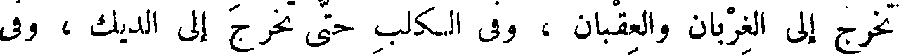
تخرج إلى الغربان والعقبان ، وفي الكلب حتى تخرج إلى الديك ، وفي
File: 000721.gt.txt (if the image is defective, simply delete all Arabic text and the line will be excluded)

الذئب حتى تخرج إلى السبع ، وفي الظلف حتى تخرج إلى الحافر ، وفي الحافر
File: 000722.gt.txt (if the image is defective, simply delete all Arabic text and the line will be excluded)
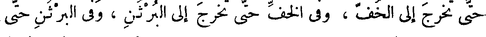
حتى تخرج إلى الخف ، وفي الخف حتى تخرج إلى البرثن ، وفي البرثن حتى
File: 000723.gt.txt (if the image is defective, simply delete all Arabic text and the line will be excluded)
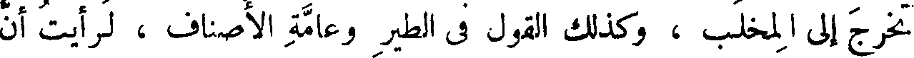
تخرج إلى المخلب ، وكذلك القول في الطير وعامة الأصناف ، لرأيت أن
File: 000724.gt.txt (if the image is defective, simply delete all Arabic text and the line will be excluded)
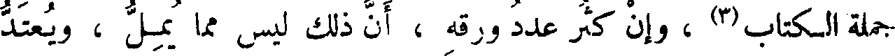
جملة الكتاب(3) ، وإن كثر عدد ورقه ، أن ذلك ليس مما يمل ، ويعتد
File: 000725.gt.txt (if the image is defective, simply delete all Arabic text and the line will be excluded)
علي فيه بالإطالة ، لأنه وإن كان كتابا واحدا فإنه كتب كثيرة ، وكل
File: 000726.gt.txt (if the image is defective, simply delete all Arabic text and the line will be excluded)
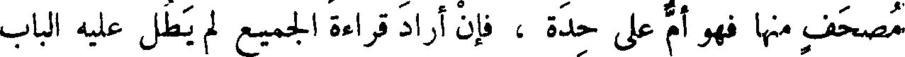
مصحف منها فهو أم على حدة ، فإن أراد قراءة الجميع لم يطل عليه الباب
File: 000727.gt.txt (if the image is defective, simply delete all Arabic text and the line will be excluded)
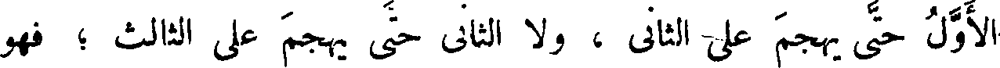
الأول حتى يهجم على الثاني ، ولا الثاني حتى يهجم على الثالث ؛ فهو
File: 000728.gt.txt (if the image is defective, simply delete all Arabic text and the line will be excluded)
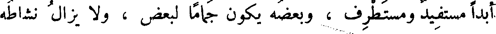
أبدا مستفيد ومستطرف ، وبعضه يكون جماما لبعض ، ولا يزال نشاطه
File: 000729.gt.txt (if the image is defective, simply delete all Arabic text and the line will be excluded)
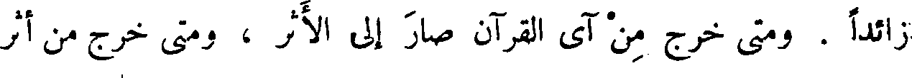
زائدا . ومتى خرج من آي القرآن صار إلى الأثر ، ومتى خرج من أثر
File: 000730.gt.txt (if the image is defective, simply delete all Arabic text and the line will be excluded)
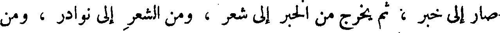
صار إلى خبر ، ثم يخرج من الخبر إلى شعر ، ومن الشعر إلى نوادر ، ومن
File: 000731.gt.txt (if the image is defective, simply delete all Arabic text and the line will be excluded)
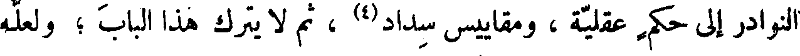
النوادر إلى حكم عقلية ، ومقاييس سداد(4) ، ثم لا يترك هذا الباب ؛ ولعله
File: 000732.gt.txt (if the image is defective, simply delete all Arabic text and the line will be excluded)
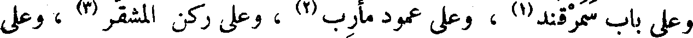
وعلى باب سمرقند(1) ، وعلى عمود مأرب(2) ، وعلى ركن المشقر(3) ، وعلى
File: 000733.gt.txt (if the image is defective, simply delete all Arabic text and the line will be excluded)
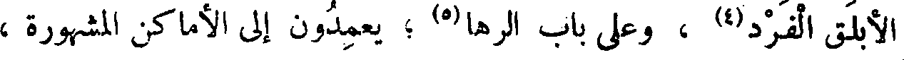
الأبلق الفرد(4) ، وعلى باب الرها(5) ؛ يعمدون إلى الأماكن المشهورة ،
File: 000734.gt.txt (if the image is defective, simply delete all Arabic text and the line will be excluded)
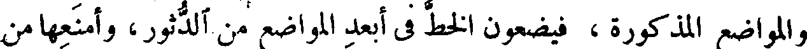
والمواضع المذكورة ، فيضعون الخط في أبعد المواضع من الدثور، وأمنعها من
File: 000735.gt.txt (if the image is defective, simply delete all Arabic text and the line will be excluded)
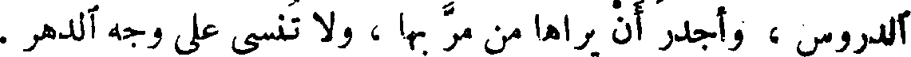
الدروس ، وأجدر أن يراها من مر بها ، ولا تنسى على وجه الدهر .
File: 000736.gt.txt (if the image is defective, simply delete all Arabic text and the line will be excluded)
File: 000737.gt.txt (if the image is defective, simply delete all Arabic text and the line will be excluded)
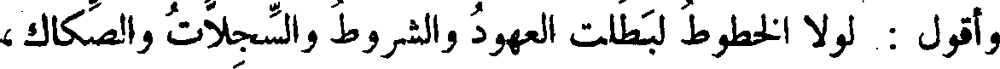
وأقول : لولا الخطوط لبطلت العهود والشروط والسجلات والصكاك،
File: 000738.gt.txt (if the image is defective, simply delete all Arabic text and the line will be excluded)
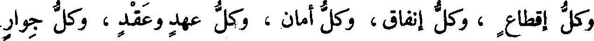
وكل إقطاع ، وكل إنفاق، وكل أمان ، وكل عهد وعقد ، وكل جوار
File: 000739.gt.txt (if the image is defective, simply delete all Arabic text and the line will be excluded)
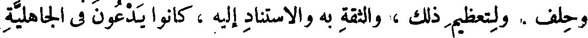
وحلف . ولتعظيم ذلك ، والثقة به والاستناد إليه ، كانوا يدعون في الجاهلية
File: 000740.gt.txt (if the image is defective, simply delete all Arabic text and the line will be excluded)
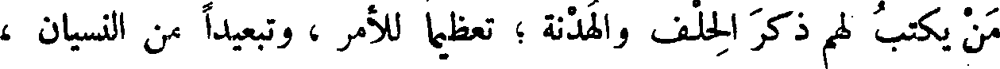
من يكتب لهم ذكر الحلف والهدنة ؛ تعظيما للأمر ، وتبعيدا من النسيان ،
File: 000741.gt.txt (if the image is defective, simply delete all Arabic text and the line will be excluded)
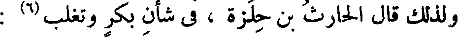
ولذلك قال الحارث بن حلزة ، في شأن بكر وتغلب(6) :
File: 000742.gt.txt (if the image is defective, simply delete all Arabic text and the line will be excluded)
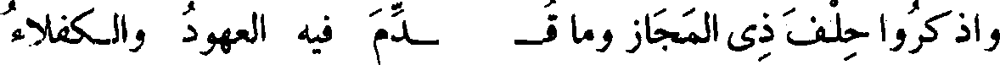
File: 000743.gt.txt (if the image is defective, simply delete all Arabic text and the line will be excluded)
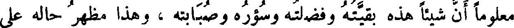
معلوما أن شيئا هذه بقيته وفضلته وسؤره وصبابته ، وهذا مظهر حاله على
File: 000744.gt.txt (if the image is defective, simply delete all Arabic text and the line will be excluded)
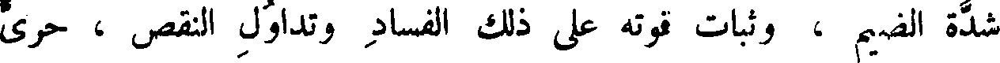
شدة الضيم ، وثبات قوته على ذلك الفساد وتداول النقص ، حري
File: 000745.gt.txt (if the image is defective, simply delete all Arabic text and the line will be excluded)
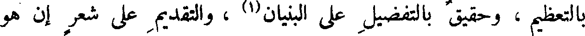
بالتعظيم ، وحقيق بالتفضيل على البنيان(1) ، والتقديم على شعر إن هو
File: 000746.gt.txt (if the image is defective, simply delete all Arabic text and the line will be excluded)
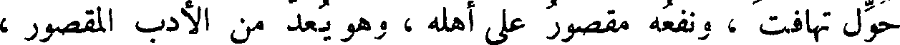
حول تهافت ، ونفعه مقصور على أهله ، وهو يعد من الأدب المقصور ،
File: 000747.gt.txt (if the image is defective, simply delete all Arabic text and the line will be excluded)

وليس بالمبسوط ؛ ومن المنافع الاصطلاحية وليست بحقيقة بينة(2) ، وكل
File: 000748.gt.txt (if the image is defective, simply delete all Arabic text and the line will be excluded)
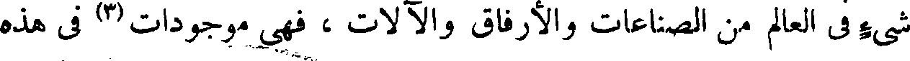
شيء في العالم من الصناعات والأرفاق والآلات ، فهي موجودات(3) في هذه
File: 000749.gt.txt (if the image is defective, simply delete all Arabic text and the line will be excluded)
الكتب دون الأشعار ، وهاهنا كتب هي بيننا وبينكم ، مثل كتاب
To Save: `Ctrl+s`, make sure to choose `Webpage, complete`!